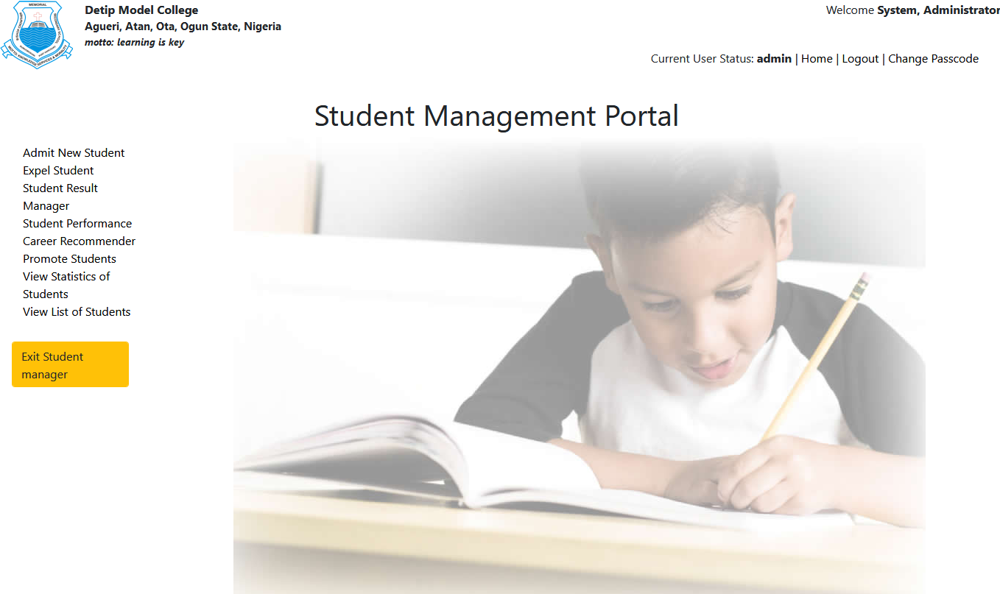
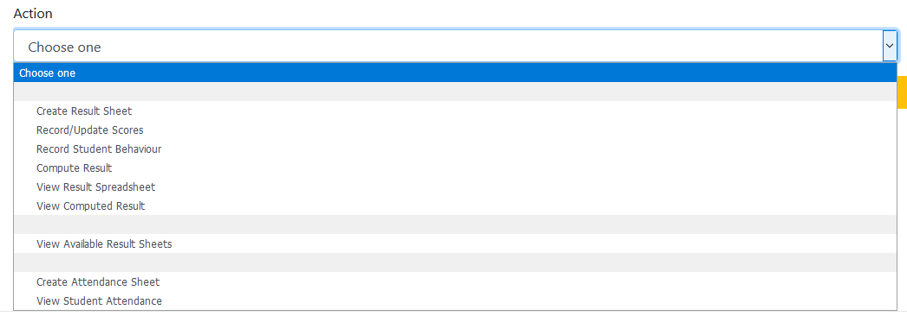
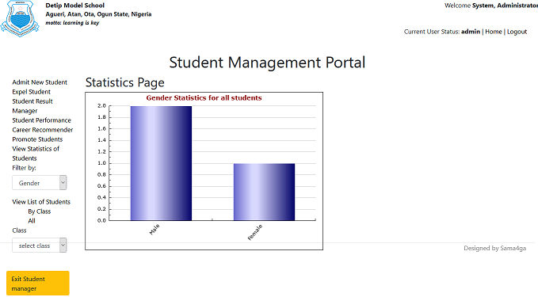
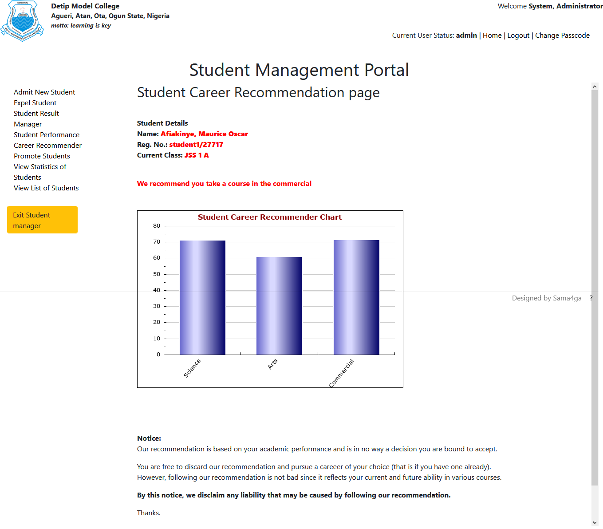
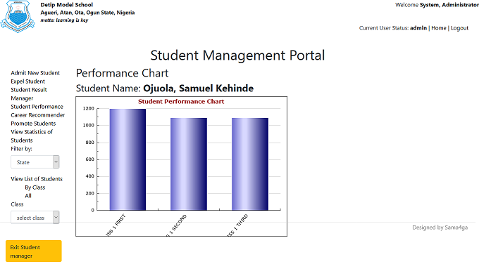
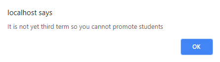
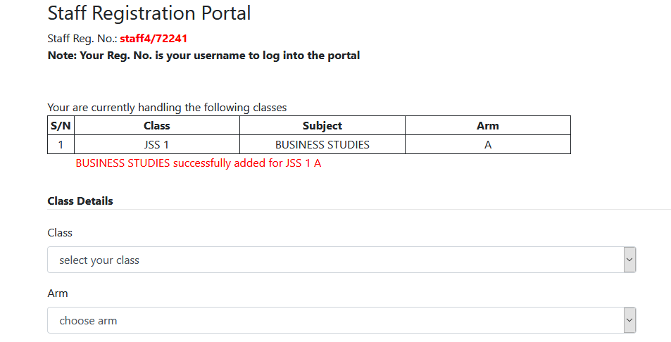
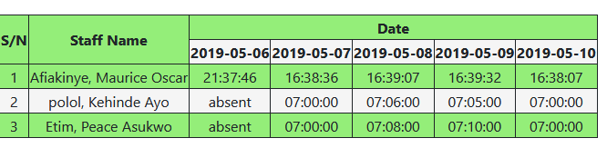
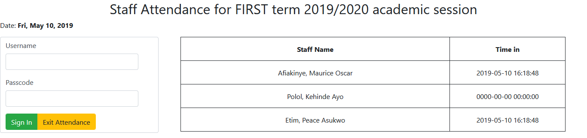
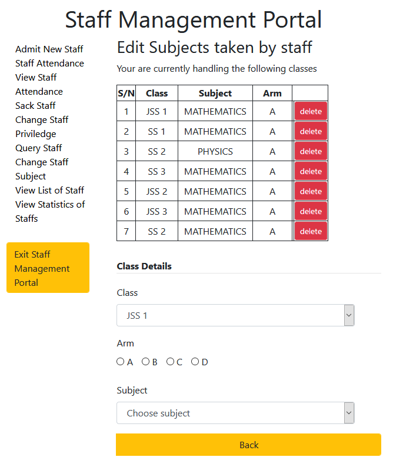

Help File
School Management System is a software designed to help in proper management of our school.
It offers the following features:
Features offered in the school management system
-
Student Management Portal
This portal is meant to carter for the needs of the students and their proper and effective management.

Student Management Portal
-
Admit Student Portal:
Here, new students can be registered. It carters for their registration and automatic placement in classes where they are admitted.
The details needed for their registration are as follows:
-
Personal details
- Surname*
- Othernames*
- Gender*
- Date of Birth*
- Nationality*
- State of Origin*
- LGA of Origin*
- Passport
-
Contact details
- Parents/Guardian*
- Phone 1
- Phone 2
- Email
- Residential Address*
- Home Address
-
Medical Details
- Disability
- Health Issue
- Description of Health Issue
- Genotype
- Blood Group
-
Upload Documents
- Birth Certificate
- Certificate of Origin
- Medical Certificate of Fitness
- medical Report
-
Emergency Details
- Family Doctor
- Family Hospital
- Family Hospital Address
- Family Doctor's Phone Number
-
Class Details
- Class Admitted*
- Session*
- Arm*
- Area of Specialization*
- Sport Group
- Previous School Attended (if any)
Fields marked * are mandatory fields and values
must be supplied for them else the registration will not be completed.
Provision has been made to display the number of students currently in any selected class and/or arm.
This is to guide against overccrowding a class and/or arm and to ensure putting a fixed number of students per class/arm.
-
Result Manager:
This page is designed to manage result creation and computation.
Student's result sheet can also be viewed likewise class broadsheet.
Incorporated into this portal is the ability to create and view student attendance.
Attendance can only be marked by class teachers but its creation and viewing can be done by both class teachers and admin only.
Whereas, result creation, filling, computation as well as viewing can be done by both class teachers and admins and none other.
Aditionally, the admin can query to know the available result and attendance sheets

Student Result Manager
-
View Student List:
Viewing student can be done by class basis or by viewing all the students at once.
Records of the total numbers of students available in the class and the number according to gender are displayed for easy querying.
This page provides features for viewing/editing student record.
Care should be taken while editing student class details, as a change in class or arm automatically removes the student and his/her record from the former class/arm to new class/arm.
This is useful if the intention is to change the student's class/arm or promote the student before the general third term promotion or correct an error that occured during registation.
-
Student Statistics:
Statistics of students is based on age, state of origin and gender.
This is displayed on a graph for easy viewing.

Student gender statistics
-
Expel Student:
This makes provision for the expulsion of student from the school.
Once a student is expelled, his/her record is permanently deleted and can only be recovered from a backup file.
his underscores the importance of regurlarly backing up the database especially when a significant change has been made (e.g. at the end of every session/term).
-
Career Recommender
Career can be recommended for students using this portal. The student career recommender is the tool used in recommending career for students.
It makes use of the cognitive abilities of the students in its operation. Students in the junior secondary section are recommended to either untake courses in science,
arts or commercial based on their performance in subjects related to this fields.

Career recommender - junior
Career recommender - senior
Recommendations made by this app is not absolute and the students are under no obligations to accept it. Acceptance of recommendations made by the app is at student's or parent's risk.
To underscore this fact, the following notice/disclaimer has bee appended to the recommendation.
Our recommendation is based on your academic performance and is in no way a decision you are bound to accept.
You are free to discard our recommendation and pursue a careeer of your choice (that is if you have one already).
However, following our recommendation is not bad since it reflects your current and future ability in various courses.
By this notice, we disclaim any liability that may be caused by following our recommendation.
Thanks.
-
Performance Chart
This tool shows via a chart, the historical academic performance of students. This is to track students performance and enable the administration to make informed decisions and take appropriate actions towards the students as regards the students performance in the light of the observed trend.

Student performance chart
-
Promote Students
Students can be automatically promoted at the end of third when all results have been computed and distributed accordingly.
The promotion should be done before a new session is started and when the term result has been uploaded to the online server.
To prevent promoting student at any time other than third term, a confirmation is required before the promotion can be processed.

Confirm Promotion dialog
Once the promotion is done, students records are automatically moved to the next higher class. For graduating students,
their records are moved to the list of graduates produced by the school.
-
Staff Management Portal
Like the student management portal, it is designed to carter for the managerial needs of staffs and provides similar features as those of the student management portal.
It consists of:
-
Admit Staff
-
Personal details
- Surname*
- Othernames*
- Gender*
- Date of Birth*
- Nationality*
- State of Origin*
- LGA of Origin*
- Passport
-
Contact details
- Phone 1
- Phone 2
- Email
- Residential Address*
- Home Address
-
Medical Details
- Disability
- Health Issue
- Description of Health Issue
- Genotype
- Blood Group
-
Upload Documents
- Curriculum Vitae
- Birth Certificate
- Certificate of Origin
- Medical Certificate of Fitness
- medical Report
-
Bank Details
- Bank
- Account Number
- Account Name
-
School Details
- Qualification
- Position
- Principal
- Vice Principal Administration
- Vice Principal Academic
- Bursar
- Cashier
- Boarding Master
- Boarding Mistress
- Secretary
- Clerical Officer
- Priviledge
- Teaching Staff
- Class Teacher
- Account
- Bursar
- Public Relations Officer
- Non-Teaching Staff
- Classs+
- Arm+
- Salary
- Next of Kin
- Relationship with Next of Kin
- Choose Password*
- Confirm Password*
Note: Fields marked * are mandatory
fields and values must be provided for them otherwise the registration will not be completed.
Fields marked + are displayed
only when the class teacher privieldge is chosen. In this case, the class and
the arm the teacher is to act as class teacher must be specified. A teacher can act as class teacher
for exactly one class only.
Once the submit button is clicked and the registration successful, another page is opened where
the staff will be assigned subjects and class to teach. This happens only when the staff is granted
a teaching staff or a class-teacher priviledge. There is no restriction on the number of subjects a
staff can take. Subjects assigned to a staff here can be changed in the Miscellaneous portal.
- Class
- Arm
- Subject

Class allocation page for staff
-
Create Staff Attendance
This allows for the creation of staff attendance sheet for the term.
-
View Staff Attendance
Here, the attendance sheet for staffs can be viewed.
Displayed on the attendance sheet are: staff records and the sign-in times of the staffs on different days.

Staff Attendance Sheet
-
Staff Attendance
This makes provision for the signing-in of staffs. To sign-in, the username of staffs (which is their registration number) and their passwords are required.
Once the sign-in is successful, the attendance is auto-marked and there is no need to sign-out as the details provided are only used to mark the attendance sheet and not to sign-into the portal.
Displayed besides and to the right of where staffs are to sign-in is a record of the staffs that heve signed-in and their sign-in times.

Staff Attendance Portal
-
Query Staff
Staffs can be issued queries via email or text messages here.
-
Change Staff Priviledge
This allows for changing a staff from one priviledge to another. A staff can be given admin priviledge here only.
-
Sack Staff
To sack a staff, the name of the staff is entered and once the staff has been found in the search result displayed beneath the search section,
the proceed button should be clicked. To ensure that a mistake is not made, a confirmation message is displayed to the user. The staff will only be sacked
if the confirmation dialog box is clicked in the affirmative. Otherwise, no action is taken against the staff.
Once a staff is successfully sacked, his/her details are permanently deleted and can only be recovered from a backup file.
-
Change Staff Subject
The change staff subject page is used to change the subjects handled by teaching staff. It should be noted that class teachers are also teaching staff.
The list of subjects currently handled by the teacher is displayed with buttons for deleting these subjects.
A confirmation dialog is displayed before deleting an existing subject handled by the teacher.
New subjects can be added as desired using the form directly below the table displaying the subjects currently handled by the teacher.
The subjects are auto-loaded as the class is chosen. This is to ensure that the correct subjects are chosen for the right class.

Change class details sample page
-
View Staff List
Here, the full list of staff employed in the school is displayed. Provision has been made for viewing and editing the record of each of the staff as desired.
The details of the staff can be printed while viewing. Editing should be done with the intention of correcting an error in the details entered during the
registration of the staff.
-
View Statistics of Staff
Staff Statistics like student statistics can be viewed on "gender", "age", and "state" basis.
-
Message Portal
This is strictly to send text messages or email to parents and/or staffs.
Messages can be sent to; all staffs and parents at once, only parents,
only staffs, specific staffs, or specific parents. If the "To" field is set to "Some Parents",
the contact details of all the parents in the database is displayed in a table displayed beside
the form to the its right. The same applies when the "To" field is set to "Some Staffs".
Provision has also been made to
add the contacts of staffs and/or parents whose contacts details are not in the database when sending messages.
the details of such staffs and/or parents should be written in the "Add emails not in selected list (one per line)"
field or the "Add numbers not in selected list (one per line)" field.
The portal can also be used to send messages to other contacts not in database at all. To do this, the "To" field should be set to
either "Some Parents" or "Some Staffs". when this is done, no staff or parent contact shold be marked in the table displayed beside
this form and to the right of it.
-
Miscellaneous Portal
-
Start New Session
This makes provision for starting a new academic session. A new academic session should only be begun at the end of third term when;
all the results have been computed and distributed to parents, uploaded to the online server, and all the students have been promoted to a new class.
-
Backup Database
Database should be backedup at regular intervals especially at the end of a term and/or session.
-
Restore Database
Backup database records can be restored as desired. The only precaution to be taken here is that, restoring a database deletes recents changes made to the database after the last backup.
-
Upload Results
This button is used to upload results to the online server for parents to access. The upload is automatic and may take some time. Be sure to be connected to the internet before uploading result since the upload uses internet connection
to connect to the online server.
-
Upload Attendance
Uploading attendance should be done daily so that parents can see and know about their ward(s) whereabout daily as he ward(s) leaves for school.
This upload also makes use of internet connection to send the attendance to the online server, therefore, the computer should have internet access for this to work.
-
Change Resumption and Closing Dates
Closing and resumption dates can be changed using this tool. The current details are displayed and can be edited as required. The change is recorded once the submit button is clicked.
This change is reflected on the result sheet of the students.
-
Go online
This tool makes provision for accessing the online portalfrom the app. This also requires internet connection. In the online portal, results and attendance can be uploaded from there.
-
Add Arm
This makes provision for adding more class arms as desired.
-
Edit Subjects
Here, Subjects can be deleted and added as desired. a form is provided for adding new subjects and the subject type.
The type as used here relates to the set of students offering the subjects e.g general - for all students in the class, science - for science students only, etc.
The class is chosen and the subjects offered by the class is displayed with buttons for deleting the subjects beside each subject. A confirmation dialog box is displayed before any
subject is deleted.
-
Update License
The license for the software shall be updated using this page. The only field required here is the license key gotten from the software administrator.
This key should be copied and pasted on the textbox provided after which the update button is clicked. Once a valid license key is provided, the software will be updated accordingly
and made ready once again for use.
-
Fees Portal
-
Setup Fees
In this page, fees for the current session and term for the various classes are setup.
This should be done before the creation of the fees table.
-
Create Fees Table
Used for creating fees record table.
-
Record Fees
Fees paid by students for the current term is recorded using this page. Accurate details should be provided as per the teller number and amount paid.
After the payment of the fees, the software automatically produces a reciept of fees payment recieved. This receipt can, of course, be printed and given to the student or the parent/guardian.
Worthy of note is the fact that fees payment made are automatically recorded as sales by the software.
-
View Fees Record
Fees paid by students for the current term can be viewed here. Also displayed together with this record is the debts owed by the students throughot his/her stay in the school.
It will be useful to view the amount owed by each student before proceeding to record the fees payed. Also, the record of the debts of the student can be viewed
and parents/guardain notified accordingly.
-
Show Debtors
A comprehensive list of all students indebted to the school is shown here. The record is an historical one as it shows the fees owed by students since their admission into the school.
-
Sales Portal
-
Record Sales
Used to record sales made. The app is designed such that items can be sold and by school and such sales managed by the app appropriately.
It should be noted that school fees payment made are automatically recorded by the portal as income in the sales record.
A receipt is issued at the end of every sales and can be printed.
-
View Sales Record
Record of sales made can be viewed using this portal. The record is displayed for the chosen session and month.
The displayed record can be printed or exported in excel-format for viewing in microsoft excel.
-
Record Expenses
Expenses made by the school can be recorded and managed accordingly using this portal.
-
View Expense Record
Records of expenses recorded can be viewed on a per session per month basis. That is, for a selected session and month, the record of expense made is displayed.
Salary payment should be recorded as an expense.
Provision has been made to print this record or export to microsoft excel spreadsheet.
-
Load Products
Products sold by the school can be recorded here. This makes for proper management of the items by the portal as the stocks can be queried to know the quantity
left at any given time. This helps to alert for restocking as at when due.
-
Show Debtors
A list of debtors is displayed here and provision made for paying their debts.
-
View Summary Record
A comprenhensive account of sales and expenses made per session cna be viewed here. This makes provision for knowing when a profit is made or when the school is running at a loss.
-
View Stocks
Products available in the store can be viewed from this portal. THis helps the school to know when a product is no longer available and should be restocked.